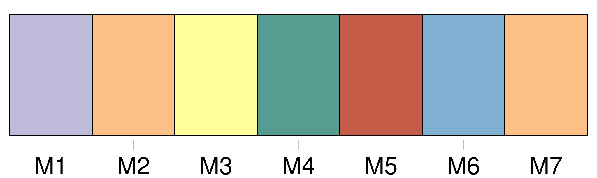

Longueur nb maillons : 20 mentions |
 |
Alternance On ne peut résumer le triomphe [du candidat travailliste] , à cette question. [1 phrases] La raison principale du succès de [M. Barak] repose sans doute sur [sa] grande capacité d'adaptation.
Au cours des derniers mois, [cet ancien chef d'état-major connu pour ses hauts faits d'armes et ses actions d'éclat] , a su mettre un pied partout.
Contrairement à Benyamin Netanyahu, qui a joué uniquement sur l'impact psychologique de la sécurité d'Israël, [il] a fait de la situation économique et de la progression du chômage, des thèmes de campagne.
[Le leader travailliste] a aussi observé et tenu compte de l'évolution de la société israélienne, qu' [il] a préféré accompagner plutôt que de lui courir après, avec un train de retard. Ainsi, [il] a rassuré les laïcs sans se couper des religieux, flatté les électeurs russes, fédéré l'ensemble des mécontents de la politique et des méthodes de Netanyahu. Concernant l'avenir de la paix, [il] s'est efforcé de montrer [sa] volonté de créer un climat propice, à la reprise des discussions. Bref, s' [il] a une stratégie en dehors de la sécurité de la nation qu' [il] ne bradera jamais, c'est celle de l'éventail. [1 phrases] Mais après les acclamations, les parfums du triomphe, les discours et les serments, [Ehud Barak] va trouver les dossiers les plus épineux sur [son] bureau. [2 phrases]
Et là encore, [M. Barak] semble assuré d'une majorité, qui [lui] évitera de se comporter en metteur en scène de génie pour gouverner.
Pourtant, compte tenu des décisions fondamentales qu'il [lui] faudra prendre, et dont certaines nécessiteront un véritable consensus, le plus difficile commence pour [M. Barak] |

|
Il est possible de télécharger la ressource sur la page Ortolang |
Si vous avez des questions ou vous voyez des erreurs, merci d'envoyer un mail à silvia.federzoni89@gmail.com |